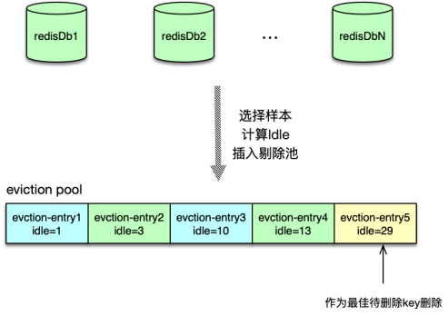
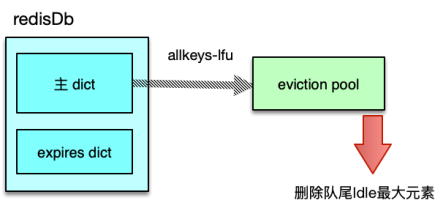

- 00 开篇寄语：缓存，你真的用对了吗？.md.html
- 01 业务数据访问性能太低怎么办？.md.html
- 02 如何根据业务来选择缓存模式和组件？.md.html
- 03 设计缓存架构时需要考量哪些因素？.md.html
- 04 缓存失效、穿透和雪崩问题怎么处理？.md.html
- 05 缓存数据不一致和并发竞争怎么处理？.md.html
- 06 Hot Key和Big Key引发的问题怎么应对？.md.html
- 07 MC为何是应用最广泛的缓存组件？.md.html
- 08 MC系统架构是如何布局的？.md.html
- 09 MC是如何使用多线程和状态机来处理请求命令的？.md.html
- 10 MC是怎么定位key的.md.html
- 11 MC如何淘汰冷key和失效key.md.html
- 12 为何MC能长期维持高性能读写？.md.html
- 13 如何完整学习MC协议及优化client访问？.md.html
- 14 大数据时代，MC如何应对新的常见问题？.md.html
- 15 如何深入理解、应用及扩展 Twemproxy？.md.html
- 16 常用的缓存组件Redis是如何运行的？.md.html
- 17 如何理解、选择并使用Redis的核心数据类型？.md.html
- 18 Redis协议的请求和响应有哪些“套路”可循？.md.html
- 19 Redis系统架构中各个处理模块是干什么的？.md.html
- 20 Redis如何处理文件事件和时间事件？.md.html
- 21 Redis读取请求数据后，如何进行协议解析和处理.md.html
- 22 怎么认识和应用Redis内部数据结构？.md.html
- 23 Redis是如何淘汰key的？.md.html
- 24 Redis崩溃后，如何进行数据恢复的？.md.html
- 25 Redis是如何处理容易超时的系统调用的？.md.html
- 26 如何大幅成倍提升Redis处理性能？.md.html
- 27 Redis是如何进行主从复制的？.md.html
- 28 如何构建一个高性能、易扩展的Redis集群？.md.html
- 29 从容应对亿级QPS访问，Redis还缺少什么？.md.html
- 30 面对海量数据，为什么无法设计出完美的分布式缓存体系？.md.html
- 31 如何设计足够可靠的分布式缓存体系，以满足大中型移动互联网系统的需要？.md.html
- 32 一个典型的分布式缓存系统是什么样的？.md.html
- 33 如何为秒杀系统设计缓存体系？.md.html
- 34 如何为海量计数场景设计缓存体系？.md.html
- 35 如何为社交feed场景设计缓存体系？.md.html
- 捐赠
23 Redis是如何淘汰key的？
你好，我是你的缓存课老师陈波，欢迎进入第 23 课时“Redis 淘汰策略”的学习。本课时我们主要学习 Redis 淘汰原理、淘汰方式、以及 8 种淘汰策略等内容。
淘汰原理
首先我们来学习 Redis 的淘汰原理。
系统线上运行中，内存总是昂贵且有限的，在数据总量远大于 Redis 可用的内存总量时，为了最大限度的提升访问性能，Redis 中只能存放最新最热的有效数据。
当 key 过期后，或者 Redis 实际占用的内存超过阀值后，Redis 就会对 key 进行淘汰，删除过期的或者不活跃的 key，回收其内存，供新的 key 使用。Redis 的内存阀值是通过 maxmemory 设置的，而超过内存阀值后的淘汰策略，是通过 maxmemory-policy 设置的，具体的淘汰策略后面会进行详细介绍。Redis 会在 2 种场景下对 key 进行淘汰，第一种是在定期执行 serverCron 时，检查淘汰 key；第二种是在执行命令时，检查淘汰 key。
第一种场景，Redis 定期执行 serverCron 时，会对 DB 进行检测，清理过期 key。清理流程如下。首先轮询每个 DB，检查其 expire dict，即带过期时间的过期 key 字典，从所有带过期时间的 key 中，随机选取 20 个样本 key，检查这些 key 是否过期，如果过期则清理删除。如果 20 个样本中，超过 5 个 key 都过期，即过期比例大于 25%，就继续从该 DB 的 expire dict 过期字典中，再随机取样 20 个 key 进行过期清理，持续循环，直到选择的 20 个样本 key 中，过期的 key 数小于等于 5，当前这个 DB 则清理完毕，然后继续轮询下一个 DB。
在执行 serverCron 时，如果在某个 DB 中，过期 dict 的填充率低于 1%，则放弃对该 DB 的取样检查，因为效率太低。如果 DB 的过期 dict 中，过期 key 太多，一直持续循环回收，会占用大量主线程时间，所以 Redis 还设置了一个过期时间。这个过期时间根据 serverCron 的执行频率来计算，5.0 版本及之前采用慢循环过期策略，默认是 25ms，如果回收超过 25ms 则停止，6.0 非稳定版本采用快循环策略，过期时间为 1ms。
第二种场景，Redis 在执行命令请求时。会检查当前内存占用是否超过 maxmemory 的数值，如果超过，则按照设置的淘汰策略，进行删除淘汰 key 操作。
淘汰方式
Redis 中 key 的淘汰方式有两种，分别是同步删除淘汰和异步删除淘汰。在 serverCron 定期清理过期 key 时，如果设置了延迟过期配置 lazyfree-lazy-expire，会检查 key 对应的 value 是否为多元素的复合类型，即是否是 list 列表、set 集合、zset 有序集合和 hash 中的一种，并且 value 的元素数大于 64，则在将 key 从 DB 中 expire dict 过期字典和主 dict 中删除后，value 存放到 BIO 任务队列，由 BIO 延迟删除线程异步回收；否则，直接从 DB 的 expire dict 和主 dict 中删除，并回收 key、value 所占用的空间。在执行命令时，如果设置了 lazyfree-lazy-eviction，在淘汰 key 时，也采用前面类似的检测方法，对于元素数大于 64 的 4 种复合类型，使用 BIO 线程异步删除，否则采用同步直接删除。
淘汰策略

Redis 提供了 8 种淘汰策略对 key 进行管理，而且还引入基于样本的 eviction pool，来提升剔除的准确性，确保 在保持最大性能 的前提下，剔除最不活跃的 key。eviction pool 主要对 LRU、LFU，以及过期 dict ttl 内存管理策略 生效。处理流程为，当 Redis 内存占用超过阀值后，按策略从主 dict 或者带过期时间的 expire dict 中随机选择 N 个 key，N 默认是 5，计算每个 key 的 idle 值，按 idle 值从小到大的顺序插入 evictionPool 中，然后选择 idle 最大的那个 key，进行淘汰。

选择淘汰策略时，可以通过配置 Redis 的 maxmemory 设置最大内存，并通 maxmemory_policy 设置超过最大内存后的处理策略。如果 maxmemory 设为 0，则表明对内存使用没有任何限制，可以持续存放数据，适合作为存储，来存放数据量较小的业务。如果数据量较大，就需要估算热数据容量，设置一个适当的值，将 Redis 作为一个缓存而非存储来使用。
Redis 提供了 8 种 maxmemory_policy 淘汰策略来应对内存超过阀值的情况。
第一种淘汰策略是 noeviction，它是 Redis 的默认策略。在内存超过阀值后，Redis 不做任何清理工作，然后对所有写操作返回错误，但对读请求正常处理。noeviction 适合数据量不大的业务场景，将关键数据存入 Redis 中，将 Redis 当作 DB 来使用。
第二种淘汰策略是 volatile-lru，它对带过期时间的 key 采用最近最少访问算法来淘汰。使用这种策略，Redis 会从 redisDb 的 expire dict 过期字典中，首先随机选择 N 个 key，计算 key 的空闲时间，然后插入 evictionPool 中，最后选择空闲时间最久的 key 进行淘汰。这种策略适合的业务场景是，需要淘汰的key带有过期时间，且有冷热区分，从而可以淘汰最久没有访问的key。
第三种策略是 volatile-lfu，它对带过期时间的 key 采用最近最不经常使用的算法来淘汰。使用这种策略时，Redis 会从 redisDb 中的 expire dict 过期字典中，首先随机选择 N 个 key，然后根据其 value 的 lru 值，计算 key 在一段时间内的使用频率相对值。对于 lfu，要选择使用频率最小的 key，为了沿用 evictionPool 的 idle 概念，Redis 在计算 lfu 的 Idle 时，采用 255 减去使用频率相对值，从而确保 Idle 最大的 key 是使用次数最小的 key，计算 N 个 key 的 Idle 值后，插入 evictionPool，最后选择 Idle 最大，即使用频率最小的 key，进行淘汰。这种策略也适合大多数 key 带过期时间且有冷热区分的业务场景。
第四种策略是 volatile-ttl，它是对带过期时间的 key 中选择最早要过期的 key 进行淘汰。使用这种策略时，Redis 也会从 redisDb 的 expire dict 过期字典中，首先随机选择 N 个 key，然后用最大无符号 long 值减去 key 的过期时间来作为 Idle 值，计算 N 个 key 的 Idle 值后，插入evictionPool，最后选择 Idle 最大，即最快就要过期的 key，进行淘汰。这种策略适合，需要淘汰的key带过期时间，且有按时间冷热区分的业务场景。
第五种策略是 volatile-random，它是对带过期时间的 key 中随机选择 key 进行淘汰。使用这种策略时，Redis 从 redisDb 的 expire dict 过期字典中，随机选择一个 key，然后进行淘汰。如果需要淘汰的key有过期时间，没有明显热点，主要被随机访问，那就适合选择这种淘汰策略。
第六种策略是 allkey-lru，它是对所有 key，而非仅仅带过期时间的 key，采用最近最久没有使用的算法来淘汰。这种策略与 volatile-lru 类似，都是从随机选择的 key 中，选择最长时间没有被访问的 key 进行淘汰。区别在于，volatile-lru 是从 redisDb 中的 expire dict 过期字典中选择 key，而 allkey-lru 是从所有的 key 中选择 key。这种策略适合，需要对所有 key 进行淘汰，且数据有冷热读写区分的业务场景。

第七种策略是 allkeys-lfu，它也是针对所有 key 采用最近最不经常使用的算法来淘汰。这种策略与 volatile-lfu 类似，都是在随机选择的 key 中，选择访问频率最小的 key 进行淘汰。区别在于，volatile-flu从expire dict 过期字典中选择 key，而 allkeys-lfu 是从主 dict 中选择 key。这种策略适合的场景是，需要从所有的 key 中进行淘汰，但数据有冷热区分，且越热的数据访问频率越高。
最后一种策略是 allkeys-random，它是针对所有 key 进行随机算法进行淘汰。它也是从主 dict 中随机选择 key，然后进行删除回收。如果需要从所有的 key 中进行淘汰，并且 key 的访问没有明显热点，被随机访问，即可采用这种策略。
© 2019 - 2023 Liangliang Lee. Powered by gin and hexo-theme-book.